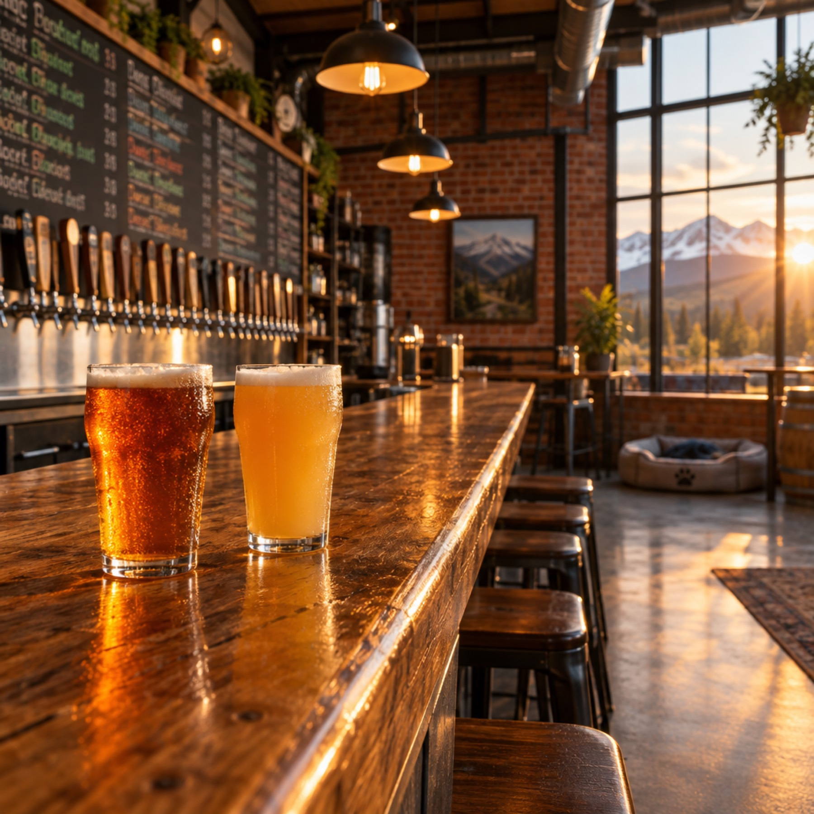

Family-run in Fort Collins since 2014
A little red brewery tucked into the airpark, pouring Sad Panda Coffee Stout, Silver Lion Pilsner, Dino Hop IPA and a rotating cast of small-batch beers made with Colorado craft malt.
Our flagship coffee stout: vanilla and chocolate aromas, caramel malt sweetness and a gentle coffee bitterness in a light, drinkable body. Celebrated every February at Pandamonium.
We brew with local malt from Root Shoot Malting and Troubadour Maltings, send our spent grain to a local farm, and run the brewery on a triple-bottom-line philosophy.
Bring your own food or non-alcoholic drinks, or arrange a food truck in the lot for your group. Tours are available on request.
On tap
Sixteen taps plus a house-made root beer and sparkling water. Everything except the nitro tap goes home in 32-oz CANtainers or 64-oz growlers, and many beers are in 12- or 16-oz cans to go.
Czech-style Pilsner. Light and refreshing with honey-sweet malt, floral Saaz hops and a hint of lemon zest.
Easy-drinking, smooth and crisp. German malts, local Vienna malt from Root Shoot and a little corn.
A Pro-Am collaboration with homebrewers Mike Boesen and Dave Carpenter, inspired by Colorado's 150th. Smooth and crisp.
Hefeweizen straight off the pilot system.
Named for head brewer Jeff. All Root Shoot malts, peach puree and classic banana-and-spice hefeweizen notes.
Light ale with mild watermelon fruitiness, tart lime and a clean finish.
Tangy, crisp kettle sour with blackberry and lime and a lingering fruit-punch finish.
Our flagship. Vanilla and chocolate aromas, caramel malt sweetness, gentle coffee bitterness, light-bodied and drinkable.
Full-flavored and balanced: pineapple, passionfruit, candied orange and pine with a crisp, dry finish.
Hazy IPA with Citra, Mosaic, Sabro and Simcoe. Citrus, passionfruit, coconut and a pillowy mouthfeel.
Craft Malt Month collaboration with Root Shoot and Troubadour. Bready base, rye spice, citrus and pine.
Brewed with Odell and New Belgium for the Coalition for the Poudre River Watershed, with kernza, rye and barley grown in Northern Colorado.
A smooth, fruity glass of delicious. Nitro tap, taproom only.
Pilot-system tea beer made with Happy Lucky's Tea Shop. Gluten free, made in a gluten-full facility.
House-made. Sweet and delicious, the equally attractive non-alcoholic beverage.
Rotating flavors.
Tap list changes often. Bars, restaurants and liquor stores: for wholesale orders contact Luke Margheim at (970) 980-6564 or LukeM@hdbrew.com.
Our story
Horse & Dragon was founded by Tim and Carol Cochran. Carol grew up in Colorado, Tim in Oregon, and they met at school in Northern California, where they fell in love with the taste of craft beer in 1987 at the Tied House in Mountain View.
Ten years in Asia (the dragon), ten years in Milwaukee and two more in Colombia followed before they started planning a brewery in January 2013. We opened to the public in May 2014 and celebrate our anniversary every May 1.
It is still a family business: daughter Tatum runs the tasting room and production schedule as general manager, and daughter Trina handles the graphic design and the books. Our four principles are simple: make great beer, treat everyone ethically, reduce our environmental impact, and be proactive members of our community.
The taproom
We are a production brewery with a cozy tasting room, indoor and outdoor seating, and a back patio we call the beach. Find us in the airpark neighborhood off Racquette Drive; the lot is small, so curb parking along Commerce Drive is normal.
Events
Ciao, Summer! returns Sunday, September 20, 2026, from 12 to 4 pm: our sixth annual sessionable mini-festival with 12 beers at 5.5% ABV or under, seven of them festival exclusives, plus a few pairings. $5 of every ticket goes to Neighbor to Neighbor.
Reviews
“Doesn't get any better than H&D. Everyone loves Sad Panda Coffee Stout, but the whole menu is special. My go to is Dino Hop, the best West Coast IPA in FoCo IMHO. The beer is great, and the people are even better.”
“This place has a classic Colorado brewery vibe. Super chill and just big enough with indoor and outdoor seating. Great selection of beers on tap and cans to go. Big fan of their Czech style pilsner (Silver Lion).”
“Love love love these brewers. As a stout drinker, there's nowhere else to get consistently amazing stout. You can't go wrong with the Sad Panda on tap, but definitely try whatever else they had.”
“Great brewery tucked away from the busy big outfits. Excellent house brews, cozy atmosphere, friendly people.”
Hours & location
| Monday | 2:00 – 7:00 pm |
|---|---|
| Tuesday | 2:00 – 7:00 pm |
| Wednesday | 2:00 – 7:00 pm |
| Thursday | 2:00 – 7:00 pm |
| Friday | 12:00 – 8:00 pm |
| Saturday | 12:00 – 7:00 pm |
| Sunday | 12:00 – 7:00 pm |
Closed November 26 and December 25, 2026. Tours by request; private events and table reservations by request through the events form.
Horse & Dragon Brewing Company
124 Racquette Drive, Fort Collins, CO 80524
Sixteen taps, a patio, soccer on the screens and no kitchen to slow you down. Bring dinner, bring friends, and we'll take care of the rest.
See what's on tap